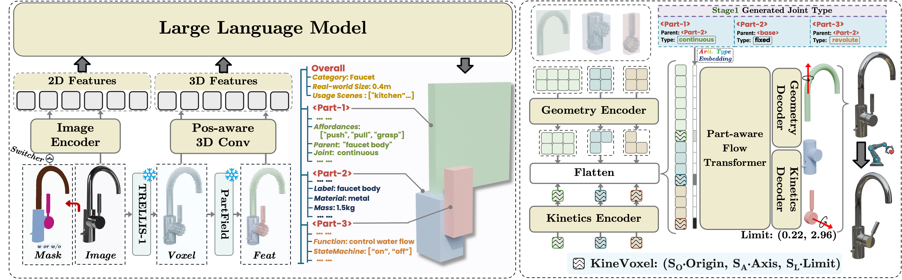
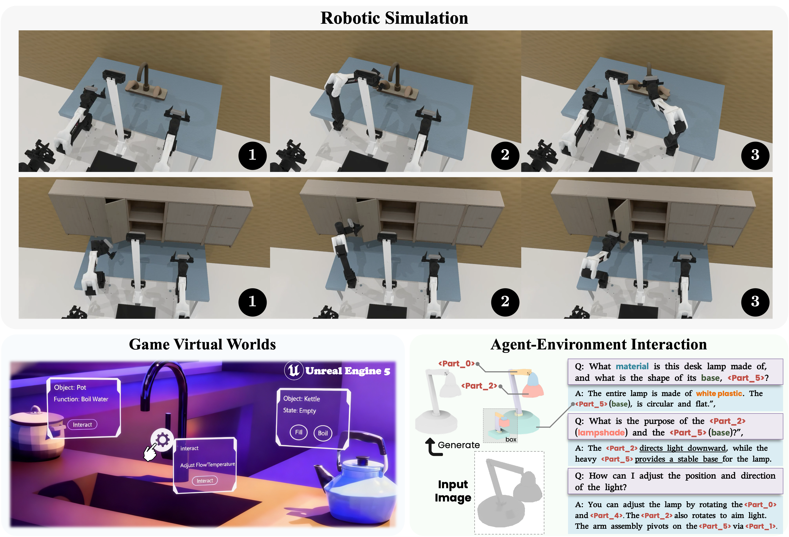

Synthesizing physics-grounded 3D assets is a critical bottleneck for interactive virtual worlds and embodied AI. Existing methods predominantly focus on static geometry, overlooking the functional properties essential for interaction. We propose that interactive asset generation must be rooted in functional logic and hierarchical physics. To bridge this gap, we introduce PhysForge, a decoupled two-stage framework supported by PhysDB, a large-scale dataset of 150,000 assets with four-tier physical annotations. First, a VLM acts as a "physical architect" to plan a Hierarchical Physical Blueprint defining material, functional, and kinematic constraints. Second, a physics-grounded diffusion model realizes this blueprint by synthesizing high-fidelity geometry alongside precise kinematic parameters via a novel KineVoxel Injection (KVI) mechanism. Experiments demonstrate that PhysForge produces functionally plausible, simulation-ready assets, providing a robust data engine for interactive 3D content and embodied agents.

PhysForge is a decoupled two-stage framework for physics-grounded 3D asset generation. In Stage 1 (VLM-based Planning), a fine-tuned VLM acts as a "physical architect": taking a single image, an optional 2D mask, and TRELLIS voxel as input, it autoregressively generates a Hierarchical Physical Blueprint that specifies per-part bounding boxes, parent-child relationships, joint types, and rich physical properties such as material, mass, intrinsic function, state machines, and atomic affordances. In Stage 2 (Diffusion-based Generation), a diffusion model conditioned on this blueprint employs our novel KineVoxel Injection (KVI) mechanism to synergistically synthesize high-fidelity geometry, texture, and precise kinematic parameters (joint origin, axis, and limits) within a unified denoising framework, producing functionally complete, simulation-ready assets.
PhysForge produces functionally complete, simulation-ready 3D assets that directly unlock a range of downstream applications. (a) Robotic Simulation: our assets can be imported into simulators such as RoboTwin, where the detailed part-level geometry and precise kinematic parameters allow robotic manipulators to realistically interact with functional parts. (b) Virtual Worlds: in game engines and interactive virtual worlds, every part is endowed with physics-grounded attributes, enabling developers to design sophisticated interaction logic directly. (c) Agent-Environment Interaction: our VLM-based framework opens a new modality of interaction—an embodied agent can directly query an asset in natural language and receive a text-based physical blueprint with bounding boxes, providing an explicit plan for manipulation.@article{
}